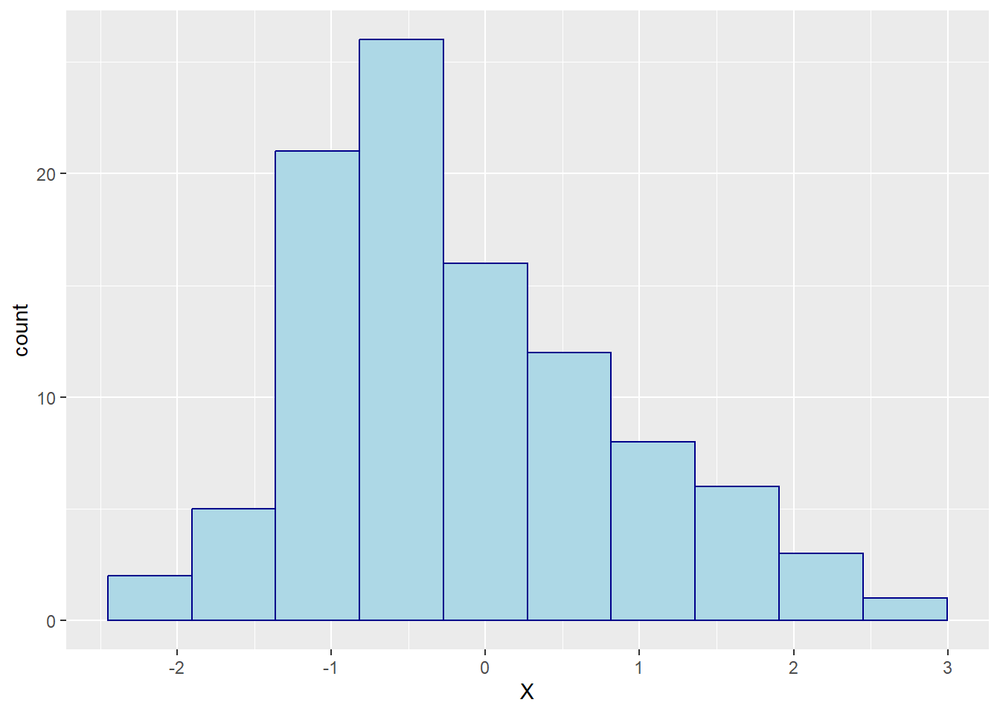
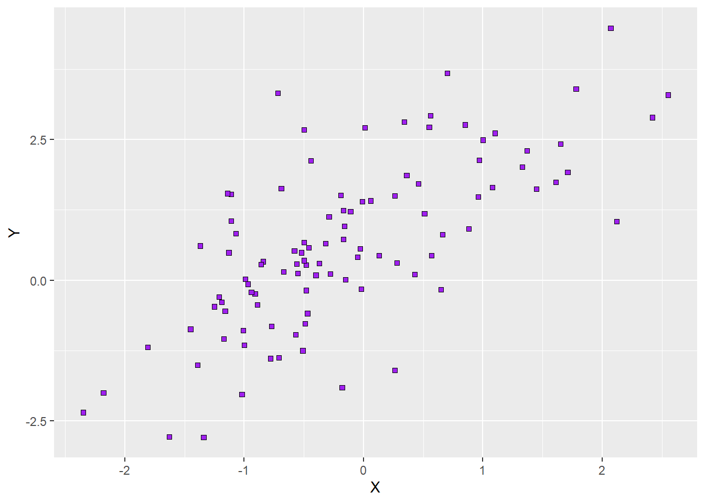

ID W X Y Z
1 1 1 -1.21 -0.30 0
2 2 2 0.28 0.31 0
3 3 3 1.08 1.65 0
4 4 4 -2.35 -2.35 0
5 5 5 0.43 0.10 0
6 6 1 0.51 1.18 0Making graphs in R
There are many ways to make graphs in R. Base R already contains functions that allow us to create plots, and there is a plethora of R packages that either contain some functions for plotting related to the core content of the package or even focus on plotting exclusively. As always, there is no right or wrong choice. How you make your graphs is very much a matter of preference.
On a very general note, base R provides us with very basic plots that do not necessarily look nice. However, it also gives us the most flexibility when it comes to modifying and enriching our graphs. Given enough experience, we can create very sophisticated graphs, line-by-line, point-by-point, and polygon-by-polygon in R using just the basic plotting functions included in base R. However, using base R is not necessarily efficient, so we may want to consider using specialised R packages for plotting.
The package that is arguably the most frequently used for visualisation of scientific data is ggplot2, and this is the package we will be using here. This package has been developed on the basis of the “Grammar of Graphics” (Wilkinson, 2005) and used a special syntax to reflect the core ideas of this grammar. In order to make sense of this syntax - and to better understand how to create plots using ggplot2 - is it important to get a basic grasp of this grammar of graphics.
A Grammar of Graphics
The idea underlying the grammar of graphics is graphics have a common principle. They are mappings from data (something abstract represented by numbers or categories) to aesthetics (things we can perceive visually, in this case). The aesthetics include the position in a coordinate system, but also information such as the shape, size, or colour of whatever object we want to plot. The different objects we can plot are geometric objects (geoms). They could be lines, bars, dots, to name just a a few. Plots in In ggplot2 have layers, that is, we build our plots, step-by-step, starting with an empty base plot to which we gradually add geoms until it looks the way we envision it.
Sometimes, it is sufficient to know which aspects of our data to make visible (aesthetics) and how to visualise them (geoms). However, formally, we also need to define the statistical transformation of our data for the purpose of plotting (stats). In some cases, we will use untransformed data, while in other cases, we want to subject the data to a log-transformation, and in yet others we may want to summarise the data by taking its mean or median.
In sum, when we use ggplot2, the aestheteics, geoms, and stats are the ingredients of our plots. Now all we need to do is learn how to define the aesthetics, which geoms there are at our disposal (we won’t be using half of them), and which stats we need to use to make informative plots.
A note on colours in R
Before we delve into the realm of plots, it is useful to talk about colours, and how they are implemented in R. In fact, R has several ways to specify colours. Here we will look the the two most commons ones: we can specify colours using colour names as character strings or via RGB-values (Red-Green-Blue values).
R has a list of colour names that are represented as character strings. This includes the basic colours such as “blue” and “green”, but also differently shaded (and oddly named) variants such as “blanchedalmond” and “darkseagreen”. Here is a list of the colours implemented in this fashion:

The alternative to calling colours by name is to call them by their RBG-values. In the RGB model, a colour is expressed in terms of its red, green, and blue component. In R, these components are defined as hexadecimal numbers ranging from 00 (a decimal zero) to FF (a decimal 255). The RGB code in R is a character string, in which we precede the RGB values with a hash (#).
For example the character string ‘#FF0000’ translates to RGB values of 255, 0, and 0, which means 100% red, 0% green, and 0% blue. This would be equivalent to calling the colour “red” in R. If we called the colour ‘#00FFFF’, the colour would have 0% red component and 100% of each green and blue. We call this colour cyan. Setting all three components to zero will yield black, setting them all to FF will yield white, and setting them, to equal values in between will produce various shades of grey. Using RGB codes to specify colours in R may take some getting used to, but the good news is that there are tons of resources on the internet showing different colours along with their RGB codes (for example, QUB has a corporate branding site that defines which colours we should use in official materials along with the respective RGB codes).
RStudio has a convenient feature when we write R scripts: it immediately displays the colour for a character string that specifies RGB values (see below).

Creating plots with ggplot2
Irrespective of what type of plot we want to create, the first step is always to create a base plot. We do so by calling the ggplot function from ggplot2. The ggplot function requires two function arguments:
- data (required): a data frame. We need to tell the function where our data is stored.
- mapping (required): this function argument tells the function the aesthetics. It requires a function call of another function, aes (for aesthetics), as its argument.
The aes function that we need to feed into ggplot for its mapping argument, takes the following arguments:
- \(x\) (required): the variable that goes on the x-axis of our plot.
- \(y\) (depending on plot type): the variable that goes on the y-axis unless the plot type predefines what goes there (e.g., frequency in a histogram).
- \(colour\) (optional): the variable that determines the colour of some geoms (points, lines); for some geoms such as bars, this arguments translates to the border colour.
- \(fill\) (optional): the variable that determines the colour of some geoms (bars, violins); if the geom is a two-dimensional object, this is the colour in which we fill the shape, as opposed to its border colour (this is defined by colour).
- \(size\) (optional): the variable that determines the size of some geoms (points, lines).
- \(shape\) (optional): the variable that determines the shape of points.
- \(linetype\) (optional): the variable that determines the type of lines.
That base plot is an empty plot. While we already define which variables will go on the axes for our plots and which variable we will use to define aesthetics such as the size, colour, or shape of potential geoms, the plot itself will be empty. Why? Because we are yet to add a layer containing a geom. That said, what information we put into the code for the base plot will already depend on the type of plot and how we want to represent the variables of our data. For example, we need to specify what goes on the x-axis and the y-axis for scatterplots and line diagrams, but not for histograms (for them, we only need the specify what goes on the x-axis). Likewise, whether we specify a third variable to determine the colour, size or shape in a scatterplot very much depends on whether we have a third variable to classify data by or whether we consider it sensible to include it.
Put differently, while the first step is always to create an empty base plot, the specific code for this plot differs slightly depending on which information we want to represent (data) and how we want to represent it (geoms). In the following, we will look at five common types of plots, namely:
- histograms
- scatterplots
- bar plots
- violin plots
- line diagrams
We cannot plot without data, so let’s make up some data that we can use for simple plots. The data contains five variables, \(ID\), \(X\), \(Y\), \(Z\), and \(W\). \(ID\) is simply a subject identifier. Both \(Y\) and \(Y\) are continuous variables, whereas \(Z\) is a two-level factor. Finally, \(W\) is a numeric variable with four levels. Here is an excerpt of the data, which is stored in a data frame called df1.
Histograms
Let’s say we want to plot a histogram of variable \(X\) in our data set. We need to know that for histograms, we only need to define what goes on the x-axis in our aesthetics. The reason is that the y-axis is always the frequency of the data, so we do not need to specify that. It is prudent to define the base plot as an R object, so this is what we will do. Here is what the syntax would look like:
# load library ggplot2, which we need to create the plots
library(ggplot2)
# create an empty base plot for a histogram of variable X in df1
p1 = ggplot(data = df1, mapping = aes(x = X))Once we run this line of code, our environment will show a new list-type object called “p1”. We can display the base plot by running its name as code. If we do so, R will display the empty base plot in the Plots tab of the Utility and Help section of RStudio’s interface (bottom right). Here is what this plot would look like:

As we can see, the variable \(X\) appears on the x-axis of the plot. The ggplot function automatically chooses the range of x-values based on the data. Since we did not specify the \(y\)-argument of the aes function, there is nothing on the y-axis yet. Note that, per default, ggplot creates a light grey background with white grid lines for its plots. We will learn how to change that later on.
Now that we have a base plot, it is time to add a new layer with the desired geom. We can do so using the function geom_histogram. This function has several optional arguments, including the mapping argument we already know from the ggplot itself. What this means is that we can overwrite the mapping of our base plot for specific geoms we add to it. For now, we will not do that. In this case, the function “inherits” the mapping from the base plot.
We will, however, use either of two optional function arguments that define how our histogram looks like, namely:
- bins (optional): the number of equally sized bins, in which the data is being sorted; defaults to 30.
- binwidth (optional): a numeric value or function that determines how wide the bins are; this argument is NULL by default (meaning that it is not specified at all); if we define it, it overrides the bins argument.
One important aspect to the ggplot syntax is that we add layers to a plot using the + operator. We can either save the new plot with the added layer as a new object, overwrite the old object with the new plot, have the new plot shown in the plot tab by not defining it as an object. Let’s say we want to group our data into 10 bins in the histogram. Let’s have a look at how the syntax would look like:
## create a histogram of X with 10 bins
# update the plot object by overwriting it
p1 = p1 +
geom_histogram(bins = 10)
# create the updated plot as a new object
p2 = p1 +
geom_histogram(bins = 10)
# have the new plot shown in the plot tab
p1 +
geom_histogram(bins = 10)If we chose the third option above or otherwise called the name of the newly defined object, the new plot will be shown in the plot tab. Here is how it would look:

As we can see, the plot now has a proper y-axis. The reason is that we chose a geom that determines what goes on this axis (frequency of the data in each bin). We can also verify that the data has been grouped into 10 bins. Finally, now that we have a proper y-axis, there are also horizontal grid lines.
So far, so good. However, we may want to change two aspects of the histogram: the colour of the bars (because the dark grey is depressing) and their border (because it looks tidier if there is a border separating the bars). We can do so by specifying two arguments of the geom_histogram function:
- colour (optional): a character string representing either a colour word R knows or an RGB code; if we did not specify a variable coding the colour of the borders of our bars in the aesthetics of our plot (either the aesthetics inherited from the base plot or ones we defined separately in the function all of geom_histogram), we can assign a border colour for all bars here.
- fill (optional): a character string representing either a colour word R knows or an RGB code; similar to the colour argument, but it determines the colour used to fill all bars.
Let’s say we prefer our bars to appear in light blue with a dark blue border. We can ask R to do that by specifying the colour and fill arguments as shown below:
# change the filling and border colours of all bars to
# light blue and dark blue, respectively
p1 = p1 +
geom_histogram(bins = 10, colour = 'darkblue', fill = 'lightblue')Here is what the plot looks with the new colours assigned:

Scatterplots
Scatterplots are the most common way to plot two continuous or ordinal variables against each other. If we want to create a scatterplot, we first need to create a base plot with the appropriate aesthetics. For now, we are content with a simple plot of the two continuous variables in our data set, \(X\) and \(Y\). The syntax for the base plot would look like this:
# create a base plot for a scatterplot of X and Y
p2 = ggplot(data = df1, mapping = aes(x = X, y = Y))Again, running this code will create a new object in our environment. Calling the objects name will show the empty plot in the plot tab. This is how it would look:

R will choose the limits of the axes to fit the data,a nd it will display the variable names on the respective axis. It will also show white horizontal and vertical grid lines but nothing else because we have not yet added a layer with a geom.
We will now add this second layer using the function geom_point, which will plot points at the coordinates determined by the values of \(X\) and \(Y\) in each row of our data frame. The function has several arguments we can use to customise the colour, size, and shape of the points that are applied to all points. The shape of the ‘points’ determines whether they only have one colour value or whether they have a filling colour that is separate from their border colour. Let’s look at the function arguments in more detail:
- size (optional): a numeric value indicating the size of the points; the default is 1; larger values produce larger points.
- colour (optional): a character string either in the form of a colour word an RGB code; default is ‘black’ (‘#000000’), determines the colour of all points. For some point shapes, this argument determines their whole colour, whereas for others it only determines the border colour (see below).
- fill (optional): a character string either in the form of a colour word an RGB code; determines the filling colour of all points, given that they can be filled (see below); default is NULL, which means no filling,t hat is, transparent shapes.
- shape (optional): a numeric value indicating how the points should look like; the default is 19, which produces single-colour points (no separate colours for border and filling).
Below is a list of possible shapes. The colour of the ‘points’ is set to blue (‘#0000FF’ or ‘blue’ in R terms) whereas the fill argument is set to light blue (‘#ADD8E6’ or ‘lightblue’). If the respective shape has only one colour in the list below, we can control this colour with the colour argument of geom_points; if it has two colours (shapes 21 to 25), we can toggle the border colour with the colour argument and the filling colour with fill.
par(mar = c(1,1,1,1))
plot(1:5, 1:5, col = 'white', axes = F, xlab = "", ylab = "", ylim = c(0.5, 5))
for(i in 1:25){
X = ceiling(i/5)
Y = 5-((i-1)%%5)
points(X,Y, pch = i, col = 'blue', cex = 2, bg = 'lightblue')
text(X, Y-0.3, paste(i))
}
Let’s say we want the points in our scatterplot to be purple squares (shape 22) with a black border. The syntax would look like this:
# add a layer with points to the base plot such that the points
# are purple squares with a black border
p2 +
geom_point(shape = 22, colour = 'black', fill = 'purple')
p2Here is what the plot would look like:


References
Wilkinson, L. (2005). The Grammar of Graphics. 2nd ed. Statistics and Computing. Springer.